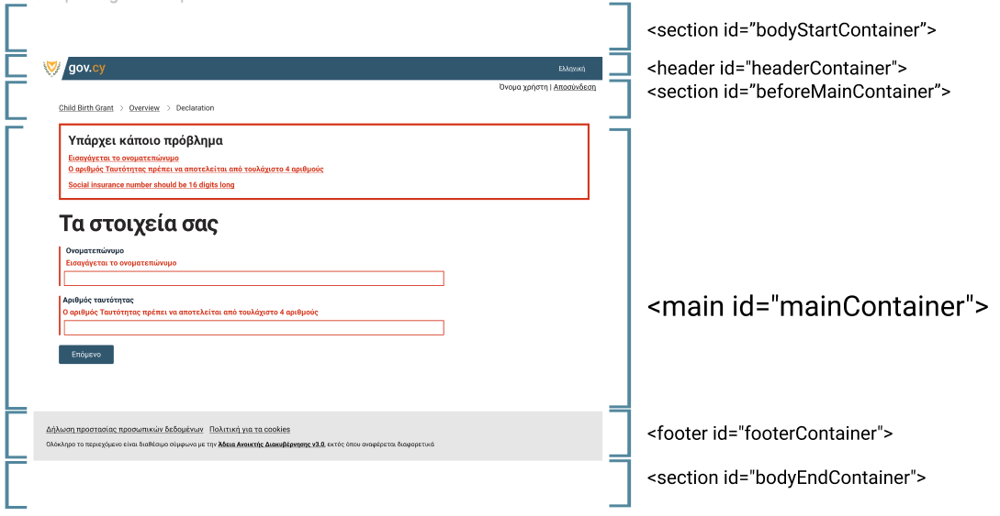

Page Templates
Max-width
Max-width defines the maximum width of the content of a page. Note that some sections such as header and footer use a fluid design for background colour and styling, but content such as text, links and icons are restricted within the max-width limit.
The default maximum width is 1280px.
Responsive breakpoint
Breakpoint is the width that determines how your responsive layout behaves across devices. The default breakpoint is ≥768px.
Page templates
All pages must use the following structure inside the <body> tag. The page width is on the max-width limit. Note the id tag is for reference and can be
| Section Name | HTML Tag | Description |
|---|---|---|
| Body start | <section class="govcy-container-fluid" id="bodyStartContainer"> </section> |
To be used to render the content before the <header> (i.e. cookie consent). Width must be fluid, same as the viewport. |
| Header | <header class="govcy-container-fluid" id="headerContainer"> </header> |
To be used as the page header. Width must be fluid, same as the viewport. |
| Before Main | <section class="govcy-container" id="beforeMainContainer"> </section> |
To be used to render the content before the <main> (i.e. back link) . Must comply with the max-width reference above and be placed in the center of the viewport. |
| Main | <main class="govcy-container" id="mainContainer"> </main> |
To be used to render the service content (i.e. question page). Must comply with the max-width reference above and be placed in the center of the viewport. This section can have one of the layouts described in the layout section. |
| Footer | <footer class="govcy-container-fluid" id="footerContainer"> </footer> |
To be used as the page footer. Width must be fluid, same as the viewport |
| Body end | <section class="govcy-container-fluid" id="bodyEndContainer"> </section> |
To be used to render the content after the <footer> (i.e. cookie consent). Width must be fluid, same as the viewport. |
Use the sample HTML Code below as a page template. The code below includes all the sections described above and uses apprpriatre govcy classes to accomodate vertical spacing, header and footer components :
<body>
<!--bodyStart-->
<section class="govcy-container-fluid" id="bodyStartContainer"> </section>
<!--Header-->
<section class="govcy-container-fluid govcy-p-0 govcy-m-0 govcy-position-relative govcy-d-print-none">
<div class="govcy-container" id="headerContainer"></div>
</section>
<!--beforeMain-->
<section class="govcy-container govcy-mb-4" id="beforeMainContainer"> </section>
<!--main-->
<main class="govcy-container" id="mainContainer"> </main>
<!-- Footer -->
<section class="govcy-container-fluid govcy-br-top-8 govcy-br-top-primary govcy-p-3 govcy-bg-light govcy-d-print-none">
<div class="govcy-container" id="footerContainer"></div>
</section>
<!--bodyEnd-->
<section class="govcy-container-fluid" id="bodyEndContainer"> </section>
</body>
Take a look at this template page with different sections highlighted with different colours.
Also take a look at a simple sample page with components of the Design System incorporated in it’s content.